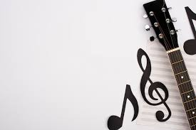

USOS
Aeroacústica: generación de sonido debido al movimiento violento en el aire.
- Arqueoacústica: estudio sistemático de efectos acústicos en sitios arqueológicos.

- Acústica en física: análisis de los fenómenos sonoros, mediante modelos físicos y matemáticos.

- Acústica arquitectónica: estudio del control del sonido, tanto del aislamiento entre recintos habitables
(casas, cuartos o habitaciones), como del acondicionamiento acústico de locales (salas de conciertos, teatros, etc.),
amortiguándolo mediante materiales blandos, o reflejándolo con materiales duros para que la construcción o la estructura
del lugar permita el máximo aprovechamiento del sonido o bien hacer que el sonido disminuya y no traspase los muros o paredes.

- Psicoacústica: estudia la percepción del sonido en humanos, la capacidad para localizar espacialmente la fuente,
es decir su ubicación, la calidad observada de los métodos de compresión de audio, etcétera.
- Bioacústica: estudio de la audición y producción de sonido en animales (quirópteros, insectos, aves, peces, cetáceos, etc.)
como herramienta para clasificaciones taxonómicas (diagnóstico de especie), estudios etológicos (comportamiento),
ecológicos (relaciones entre especies y el entorno), de biodiversidad, etc. En la actualidad uno de los métodos que
han suscitado atención es el monitoreo acústico con Sistema de Grabación Autónomo (ARU en inglés), el cual permite
obtener grandes cantidades de datos de manera no-invasiva y a bajo costo.

- Acústica ambiental: estudio del sonido en exteriores, el ruido ambiental y sus efectos en las personas y la naturaleza,
estudio de fuentes de ruido como el tránsito vehicular, ruido generado por trenes y aviones, establecimientos industriales,
talleres, locales de ocio y el ruido producido por el vecindario (la contaminación auditiva).
- Acústica subacuática: relacionada sobre todo con la detección de objetos sumergidos mediante el sonido (se utiliza
en barcos o en submarinos sonar).
- Acústica musical: estudio de la producción de sonido en los instrumentos musicales, y de los sistemas de afinación de la escala.

- Electroacústica: estudia el tratamiento electrónico del sonido, incluyendo la captación (micrófono y estudios de grabación),
procesamiento (efectos, filtrado comprensión, etc.) amplificación, grabación, producción (altavoces), etc.
- Acústica fisiológica: estudio del funcionamiento del aparato auditivo, desde la oreja a la corteza cerebral
(el oído y sus componentes, así como sus repercusiones, enfermedades y trastornos).
- Acústica fonética: análisis de las características acústicas del habla y sus aplicaciones.
- Macroacústica: estudio de los sonidos extremadamente intensos, como el de las explosiones, turborreactores, entre otros.